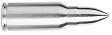

The javascript framework for XAML developers !
Discover the easiest way to develop a website extensively using data bindings.
SilverScript is designed to reduce significantly the need of creating code by connecting
your interface directly to data sources and bind it to your UI elements.
XAML developers will find it easy to learn using a familiar syntax.
 OneTime, OneWay and TwoWay binding modes
Data Templates for items lists
Converters
Typescript
Many more, and to come...
ThreeWay binding to push datacontext updates directly to your back end